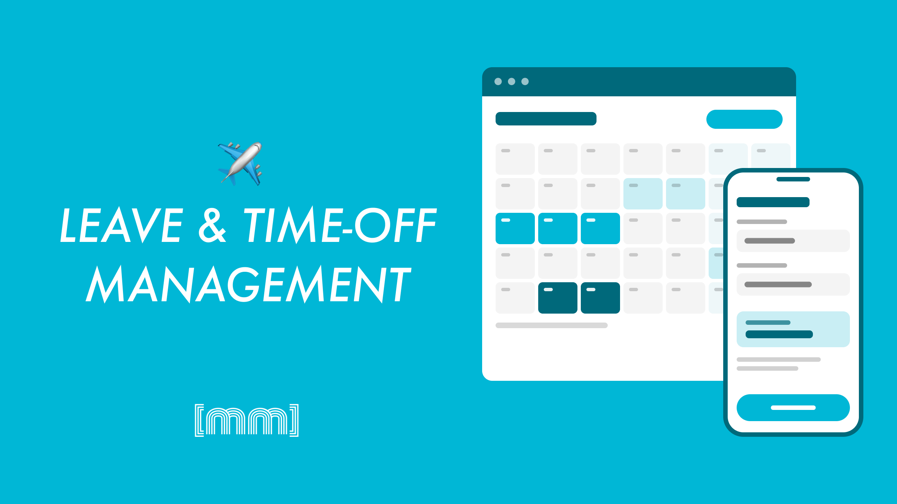
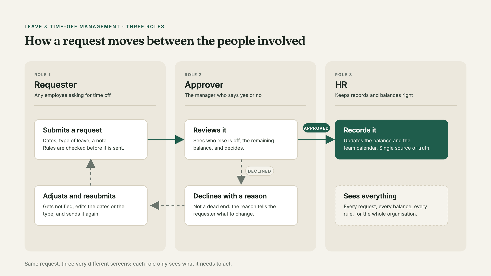
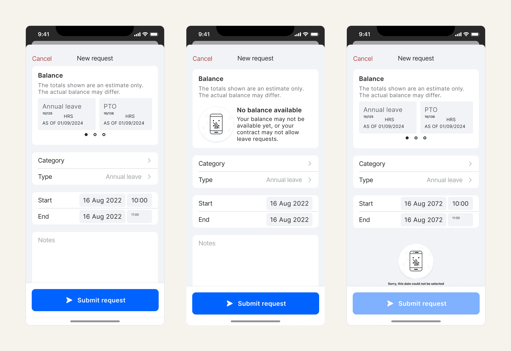
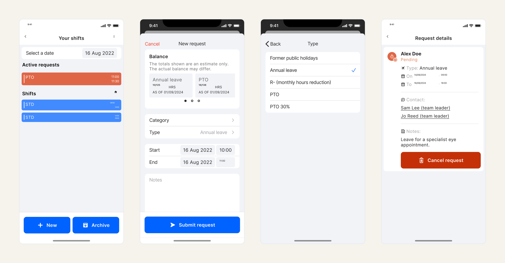

The challenge
The company was moving off a legacy third-party platform and onto one we'd build ourselves. The old setup leaned on external services to handle leave and time-off, and those services set hard limits on what we could actually do.
The first brief looked simple: design a flow that lets staff submit a leave or time-off request, and a flow that lets an approver review it and decide. That "simple" brief turned into several months of work across three user roles and two platforms.
Who I designed for
I mapped three people, each with their own flow and their own level of control:
- Requester — submits requests, checks their remaining balance, adds notes, follows the status
- Approver — reviews what comes in, approves or rejects, leaves notes
- HR — sees everything: bulk actions like company-wide closures, and stepping in when an approver is away

What the scope became
The brief grew one request at a time, and every new piece had to fit a system that wasn't built for it in the first place:
- Leave balance shown right inside the request flow
- Notes on both the requester and the approver side
- Time and date rules — minimum and maximum days per request, advance-notice windows, deadlines, and combinations of all of these
- Blocked dates for periods when nobody can request
- Request history split into active, approved, expired (the approver never got to it in time), and past
And all of it had to work on both web and mobile.

How I worked
I started with research. I went through every competitor in our sector and every dedicated workforce-management tool I could get my hands on, to see what patterns people already knew and expected.
From there I built wireframes and mapped the logic of each flow, role by role, decision point by decision point. Then came the iterations — a lot of them. Reviews, checks, tests, repeat.
For mobile I went further: I designed four versions of the same core interaction and ran internal usability tests with Maze to see which one held up.

The real challenge: designing inside the constraints
Here's where it got interesting. A lot of what I designed couldn't be built the way I'd drawn it. The third-party tools didn't allow certain interactions, and some limits went all the way down to the CSS.
The hard problem was never the happy path. It was fitting new requirements onto a system that was never meant to carry them, and keeping the experience coherent for three different roles while I did it.
Outcome
The flows work, and they shipped on web and mobile. The result was uneven, and honestly it had to be — every decision was a trade between the experience I wanted and what the underlying tools would let me have.
What I took from it: designing under enterprise constraints is its own skill. The win wasn't a perfect mockup. It was finding the version that was both usable and buildable, and knowing which compromises were safe to make and which ones would hurt the person on the other side of the screen.